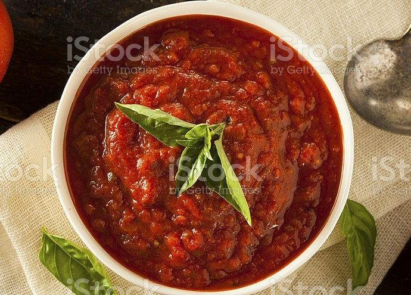

Pasta
For the Sauce:

| 1/4 cup |
Water |
| 5 nos |
Crushed Tomatoes |
| 1 Medium |
Onion |
| 4 cloves |
Garlic |
| 1tbs |
Butter |
-
In a medium-sized saucepan, boil water and salt it. Add your pasta, and cook according to the package instructions until al dente. When the pasta is cooked, reserve 1 cup of the pasta water and drain the pasta.
-
In a skillet over medium heat, melt the butter, and add olive oil. Cook the shrimp for a minute, then season with salt, pepper, and Old Bay Seasoning or paprika if using.
-
Continue to cook the shrimp until it’s pink. Do this in batches if you’re worried that you may overcook the shrimp. Remove the shrimp onto a plate and set aside.
-
In the same pan, melt butter and add garlic, cook for 30 seconds or until it’s fragrant. Add the heavy cream, and with the spatula deglaze the pan.
-
Add parmesan, let it melt then loosen the sauce with reserved pasta water and allow to simmer for a minute. Taste the sauce and see if more salt and pepper is needed.
-
Toss the pasta with the sauce until it’s well coated. Add the shrimp back in to reheat it gently, garnish with freshly chopped parsley and serve.